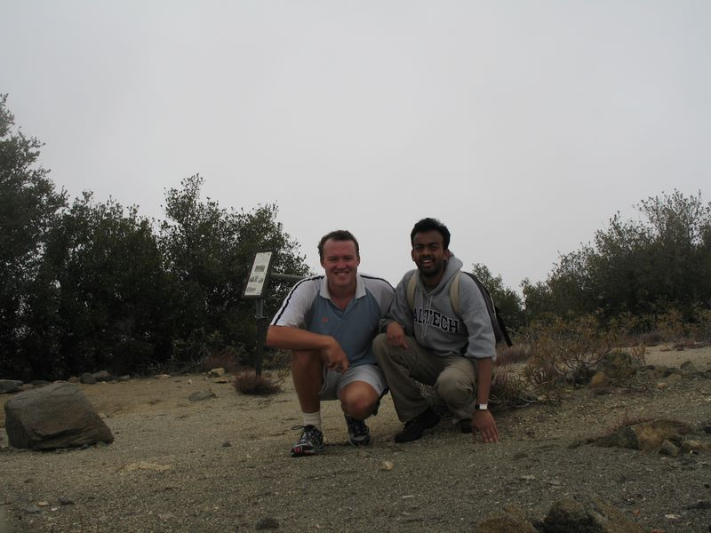

Caltech Memories -- Mikhail and I went on a practice hike to Mt. Lowe. This was as preparation for our larger Grand Canyon hike. There's an old abandoned railway project up in these mountains (Mt. Lowe Railway). (April 2006)
First |
Previous Picture |
Next Picture |
Last | Thumbnails
